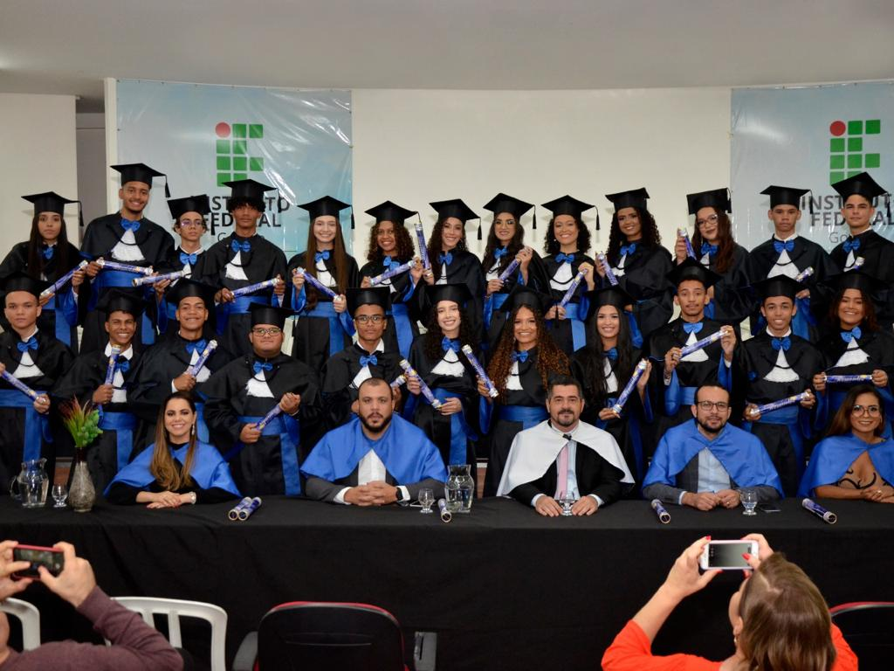

15 de Dezembro de 2022
Técnico em Infomática

Essa foto significa o fim de um ciclo, não muito duradouro, pois
surgiu a covid e passamos dois dos nossos três anos em pandemia e
quarentena, só que mesmo em pouco tempo foi maravilhoso, me formei no
curso técnico em Infomática integrado ao ensino médio no IF Goiano
Campus Campos Belos, onde tive vários amigos e pessoas que me ajudaram
a vencer essa etapa e fui apresentado a esse mundo da programação.